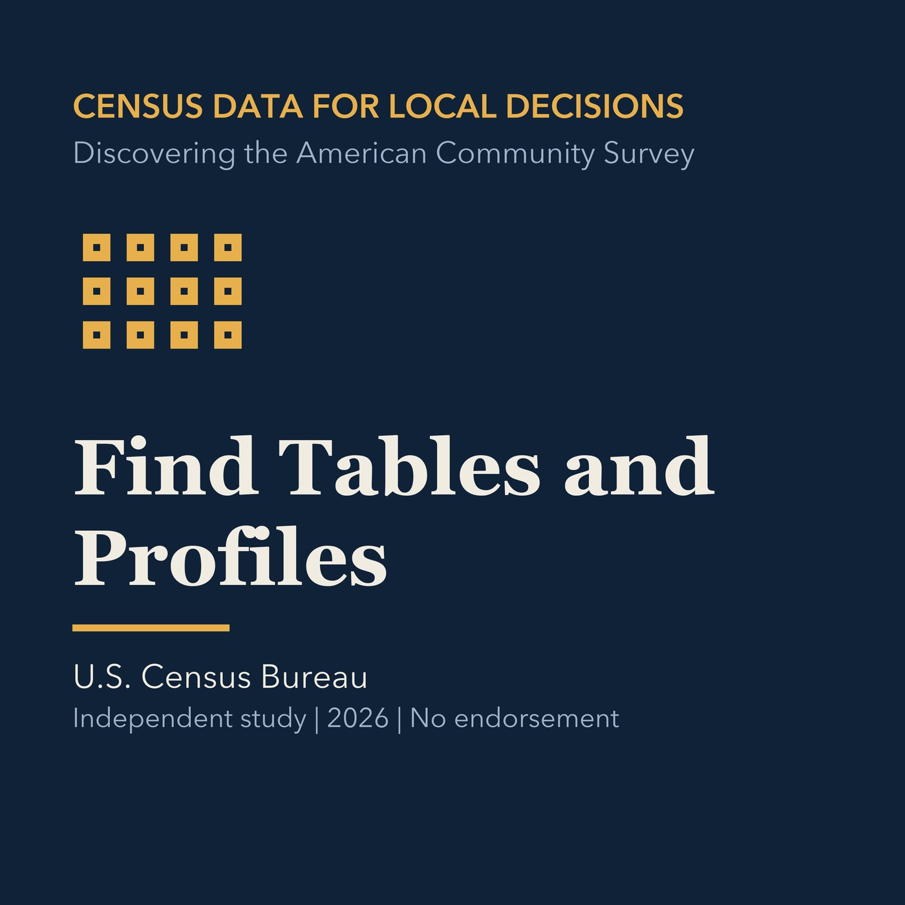

EPISODE 06
Find Tables and Profiles
Navigates detailed tables, subject tables, profiles, and comparison profiles.

- Stable GUID
1348acd2-e397-5733-8c59-924ac188f2e1- Release
- census-academy-v2026.3
- SHA-256
b0c69d2c461b7d3362a4dab0312973ef194dd673d89d15ea8513860542ec99d2